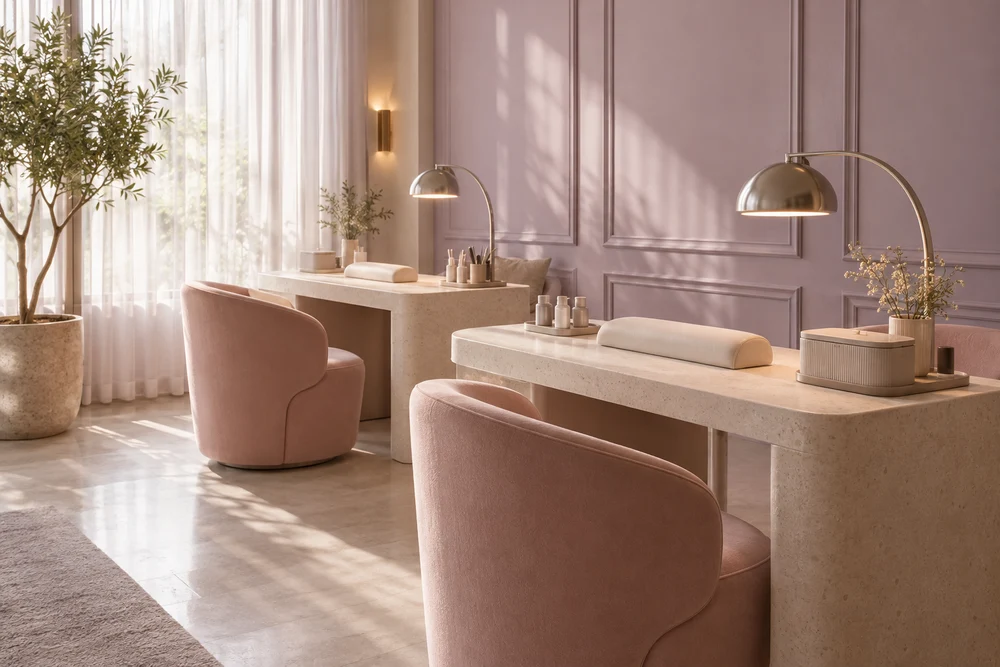

✳Плати частями
Dr.Topal
Выберите услугу и обсудите удобное время со студией
Идеи для образаУслуги и стоимость
Выберите услугу.
Стоимость подтвердит студия
62 услуг Демонстрационный блок
Идеи для образа
Иллюстрации концепта для выбора образа.
Не являются работами компании

Иллюстрация интерьера, не помещение компанииПример оформления пространства
Иллюстрация показывает настроение концепта. Это не фотография интерьера компании.
Обсудить визитПеред визитом
Как связаться?
Выберите удобный способ в блоке ниже. Телефон компании: +79533220054
Где вы находитесь?
Калуга, улица Плеханова, 96/1
Можно выбрать время на сайте?
В блоке ниже можно посмотреть демонстрацию этой возможности. Для настоящего обращения свяжитесь с компанией и согласуйте время.
Следующий шаг
Выберите удобное время
Свяжитесь с компанией, чтобы согласовать детали.
Демонстрация записиШкала 10:00–20:00 показывает пример интерфейса, а не расписание или свободные места компании. Данные формы никуда не отправляются.
Удобный день
Выберите день
Время по Москве
Сначала выберите услугу и день
Каждый отрезок — время начала. Полоса показывает длительность, если она опубликована компанией.
Выберите услугу, день и время
Демозапись подтверждена только на этой странице. Заявка не отправлена и время не забронировано. Для настоящей записи свяжитесь с компанией.